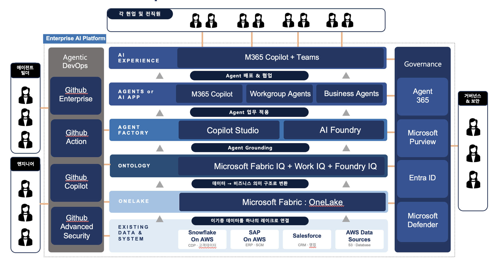

Why Build AI on Azure?
데이터에서 에이전트까지.
엔터프라이즈 의사결정자를 위한 Azure AI 기술 자료입니다. 신뢰 → 가치 → 플랫폼 → 실현의 순서로, 전체 49개 섹션을 위에서 아래로 이어서 읽을 수 있습니다. 각 장 아래에는 슬라이드 설명이 함께 있습니다.
49 Sections약 40분 분량v1.0Microsoft Solution Engineer
Executive Summary
오늘 기억할 세 가지
01
Azure를 택하는 이유는 모델이 아니라 운영 통제입니다
보안·거버넌스·비용을 하나의 일관된 정책으로 관리합니다. 모델은 계속 바뀌지만, 운영 기준은 바뀌지 않습니다.
02
기존 데이터·클라우드 투자를 그대로 살려 연결합니다
이전(migration)이 아니라 연결(connect)로 시작합니다. 잘 돌아가는 웨어하우스·레이크를 교체할 필요가 없습니다.
03
4~6주 파일럿으로 처리시간·비용·리스크 KPI를 먼저 검증합니다
가짜 숫자 대신 여러분의 데이터로 증명하고, 성과가 확인된 유스케이스부터 확장합니다.
Why Build AI on Azure?
Contents
신뢰에서 실현까지, 네 개의 파트
기술 스펙이 아니라 의사결정의 순서로 구성했습니다. 믿을 수 있는가 → 무엇을 얻는가 → 어떻게 만드는가 → 무엇부터 시작하는가.
PART 1
왜 지금,
왜 Azure인가
에이전트 시대의 전환과 4대 신뢰 근거
§1 · §2 · §3 · §4
PART 2
AX 3대 전략
전사 AI 전환의 세 축과 디지털 직원 관점
§5
PART 3
Enterprise
AI Platform
핵심 서비스 6종과 계층별 아키텍처
§6 · §7 · §8 · §9 · §10 · §11
PART 4
실현 ·
다음 단계
시나리오 6종과 도입 로드맵
§12 · §13 · §14 · §15
Why Build AI on Azure?
01
왜 지금, 왜 Azure인가
AI 파트너를 고를 때 가장 중요한 질문은 "무엇을 할 수 있나"가 아니라 "믿고 맡길 수 있나"입니다. 이 파트는 그 질문에 대한 근거를 정리합니다.
§1왜 지금 AI인가
§2고객이 마주한 현실적 과제
§3왜 Microsoft인가 — 4대 신뢰 근거
§4우리의 관점 — 제품이 아니라 비즈니스 성과
Part 1 · 신뢰
§1 왜 지금 AI인가
AI는 이제 일을 실행합니다
예측에서 생성으로, 생성에서 실행으로. 지금 기업이 준비해야 할 것은 대화형 챗봇이 아니라 업무를 수행하는 디지털 인력입니다.
1세대
예측 AI
ML · Analytics
데이터로 미래를 예측
수요 예측 · 이탈 예측
데이터로 미래를 예측
수요 예측 · 이탈 예측
2세대
생성형 AI
ChatGPT · Copilot
콘텐츠를 생성
문서 요약 · 코드 작성 · 대화
콘텐츠를 생성
문서 요약 · 코드 작성 · 대화
3세대 · 현재
에이전트 AI
Agentic AI
스스로 판단하고 업무를 실행
목표를 주면 도구를 써서 완수
스스로 판단하고 업무를 실행
목표를 주면 도구를 써서 완수
핵심 질문: 이 에이전트들을 어디에, 어떻게, 안전하게 운영할 것인가? — 이 자료는 바로 이 질문에 답합니다.
Why Build AI on Azure?
§1 왜 지금 AI인가
사람이 시스템을 다루던 방식이 뒤집힙니다
| 구분 | 기존 · 사람 중심 | 에이전트 AI · Human + Agent |
|---|---|---|
| 업무 방식 | 사람이 시스템을 조작 | 에이전트가 시스템을 대신 실행 |
| 데이터 활용 | 리포트를 사람이 해석 | 에이전트가 데이터를 이해하고 행동 |
| 확장성 | 인력 채용에 비례 | 재사용 가능한 패턴으로 빠르게 확장 |
| 24/7 운영 | 어려움 | 상시 가능 |
Why Build AI on Azure?
§1 왜 지금 AI인가
미루면 격차는 벌어집니다
RISK 01
경쟁 격차
먼저 도입한 조직은 처리속도·단가에서 앞서고, 그 격차는 시간이 갈수록 벌어집니다.
RISK 02
생산성 격차
반복 업무가 그대로 남으면 인력은 고부가 업무로 이동하지 못합니다.
RISK 03
Shadow AI
통제 없이 개인이 외부 AI에 사내 데이터를 넣는 사용이 이미 번지고 있습니다.
RISK 04
규제 리스크
거버넌스 없이 확산되면, 나중에 되돌리는 비용이 지금 준비하는 비용보다 큽니다.
이미 Microsoft 365 · GitHub · Microsoft Fabric을 쓰고 있다면, '지금' 시작하기 가장 가까운 곳은 그 위에 얹히는 Azure입니다.
Part 1 · 신뢰
§2 고객이 마주한 현실적 과제
AI 도입을 막는 다섯 개의 벽
AI를 도입하려는 대부분의 기업이 공통으로 부딪힙니다. 개별 도구를 더 사는 것으로는 풀리지 않습니다.
01
데이터가 흩어져 있다
Snowflake · SAP · Salesforce · 오브젝트 스토리지에 파편화되어, AI가 볼 수 있는 단일 원천이 없습니다.
02
AI가 우리 비즈니스를 이해하지 못한다
원본 테이블만으로는 "우리 회사의 매출"이 무엇인지 알 수 없습니다.
03
에이전트를 만드는 방법이 제각각이다
표준화된 개발·배포 체계가 없어 PoC는 늘어나지만 운영으로 넘어가지 못합니다.
04
거버넌스가 없다
누가 어떤 데이터에 접근하는지 통제·추적할 수 없습니다.
05
보안 · 규정 준수 리스크
AI가 민감 데이터를 유출할 위험을 사전에 차단할 방법이 필요합니다.
Why Build AI on Azure?
§3 왜 Microsoft인가
믿고 맡길 수 있는가 — 네 가지 근거
①
AI 리더십
최신 모델을 운영 가능한 방식으로 선택
Microsoft Foundry · Azure OpenAI
②
Responsible AI
& 엔터프라이즈 신뢰
데이터 주권·보안·규정 준수를 플랫폼 차원에서
Entra ID · Purview · Defender
③
End-to-End
완결 스택
데이터부터 사용자 경험까지 하나의 플랫폼
Fabric · Foundry · Azure Monitor
④
개발자 ·
생산성 생태계
노코드부터 프로코드까지 같은 기반 위에서
GitHub · Copilot · Foundry
이미 Microsoft 365 · Entra ID · GitHub · Fabric을 쓰는 조직에겐, 새로 만드는 게 아니라 쓰던 것 위에 안전하게 얹힙니다.
Part 1 · 신뢰
§3 왜 Microsoft인가
"신뢰할 수 있다"를 구체적으로 풀면
01
데이터는 당신의 것
고객 입력·출력을 파운데이션 모델 학습에 사용하지 않는 원칙, 한국 리전 우선 설계, 테넌트 격리. 데이터 상주·약관은 서비스·모델별 확인
02
모델 선택의 자유
Microsoft Foundry 모델 카탈로그에서 프론티어(OpenAI)·오픈소스·산업별 모델을 운영 가능한 방식으로 골라 바꿔 씁니다.
03
이미 가진 스택 위에서
Microsoft 365·GitHub·Fabric은 연동 가치로 얹히고, 기준을 실제로 책임지는 엔진은 Azure입니다. 원본을 옮기지 않고 연결부터 시작합니다.
04
AI를 감싸는 보안 · 거버넌스
Entra ID(신원) · Purview(데이터) · Defender(위협) · Agent 365(에이전트 통제 GA 2026.5)가 AI 전 계층을 관통합니다.
Why Build AI on Azure?
§3-① AI 리더십
최신 모델부터 실사용까지
ACCESS
Frontier 모델에 대한 접근
OpenAI(GPT 계열), 그리고 오픈소스·자체 모델까지 Microsoft Foundry 모델 카탈로그에서 선택합니다.
FREEDOM
모델 선택의 자유
특정 모델에 종속되지 않고 업무별 최적 모델을 사용합니다. 비용·정확도·지연시간 기준으로 갈아탈 수 있습니다.
PROVEN
검증된 실사용 생태계
Microsoft 365 Copilot, GitHub Copilot 등 이미 전 세계가 사용 중인 Copilot이 실사용 근거입니다.
SCALE
책임 있는 규모의 운영
글로벌 Azure 리전에서 엔터프라이즈 SLA로 제공됩니다.
Why Build AI on Azure?
§3-② Responsible AI
가장 큰 장벽은 기술이 아니라 신뢰입니다
| 신뢰 요소 | Microsoft의 접근 | 관련 Azure 서비스 |
|---|---|---|
| 데이터 주권 | 고객 입력·출력의 기반 모델 학습 미사용 원칙서비스·모델별 약관 확인 필요 | Azure OpenAI · Microsoft Foundry |
| 보안 | 제로 트러스트, 위협 탐지 내장 | Microsoft Entra ID · Microsoft Defender |
| 규정 준수 | 데이터 분류 · DLP · 감사 | Microsoft Purview |
| 안전한 AI | 콘텐츠 안전 · 프롬프트 보호 | Azure AI Content Safety |
| 투명성 | Responsible AI 표준 · 거버넌스 | Microsoft Foundry (평가 · 추적) |
Why Build AI on Azure?
§3-③ End-to-End 완결 스택
데이터부터 사용자 경험까지 한 플랫폼
DATA
데이터
Microsoft Fabric
OneLake
OneLake
MEANING
의미 · 모델
Microsoft Foundry
Azure AI Search
Azure AI Search
AGENT
에이전트
Copilot Studio
Microsoft Foundry
Microsoft Foundry
EXPERIENCE
경험
Microsoft 365 Copilot
Microsoft Teams
Microsoft Teams
하나의 통합 플랫폼
데이터 레이크부터 최종 사용자 경험까지 끊기지 않고 이어집니다.
통합 비용·리스크 감소
여러 벤더를 엮는 데 드는 통합 비용과 실패 리스크를 줄입니다.
네이티브 연동
각 계층이 네이티브로 연동 → 빠른 구축, 낮은 유지비용.
Why Build AI on Azure?
§3-④ 개발자 · 생산성 생태계
현업부터 개발자까지 같은 기반 위에서
DEVELOPER
GitHub
세계 최대 개발자 플랫폼. 에이전트도 소프트웨어처럼 개발·운영합니다.
Enterprise · Actions · Copilot · Code Security
WORKPLACE
Microsoft 365
이미 일하는 공간(Teams·Office)에 AI가 자연스럽게 스며듭니다. 새 도구 학습이 필요 없습니다.
Microsoft 365 Copilot · Teams
BOTH
현업부터 개발자까지
Low-Code(Copilot Studio)부터 Pro-Code(Microsoft Foundry)까지 모두 지원합니다.
Copilot Studio ↔ Microsoft Foundry
도구가 나뉘어도 신원 · 거버넌스 · 배포 접점은 하나입니다. 그래서 현업이 만든 에이전트도 통제 안에서 확산됩니다.
Why Build AI on Azure?
§3 왜 Microsoft인가 · 결론
AI를 어디서 구축·운영할 것인가 — 6가지 판단 기준
| 판단 기준 | 왜 중요한가 · 고객 관점 | Azure에서 어떻게 |
|---|---|---|
| 데이터 위치·주권 | 리전 밖으로 나가면 규제 리스크 | 한국 리전 우선 설계 |
| 모델 운영 | 어떤 모델을 안전하게 서빙할지 | Azure OpenAI · Microsoft Foundry |
| 보안 경계 | AI가 사내 데이터에 닿는 경로 | Private Endpoint · VNet · 망분리 |
| 네트워크 격리 | 프롬프트·응답·로그의 이동 | VNet · 방화벽 · 경로 통제 |
| 거버넌스·감사 | 누가·무엇을·언제 접근했는지 | Entra ID · Purview · Defender |
| 비용 관측 | 토큰·라이선스 비용의 가시성 | Cost Management |
Why Azure?의 답은 개별 기능이 아닙니다 — 주권·보안·거버넌스·비용을 한곳에서 통제할 수 있는 운영 관점입니다.
Part 1 · 신뢰
§4 우리의 관점
제품이 아니라 비즈니스 성과에서 출발합니다
"여러분의 어떤 업무·비즈니스 과제를 AI로 해결할 수 있을까요?" — 우리의 출발점은 언제나 이 질문입니다.
접근 3원칙
01
비즈니스 우선
기술이 아니라 성과(매출·비용·경험)에서 출발합니다.
02
작게 시작, 빠르게 확장
고가치 파일럿 → 전사 확산.
03
신뢰를 먼저
보안·거버넌스를 처음부터 함께 설계합니다.
기존 투자는 그대로 둡니다
A
이전하지 않아도 되는 경우
원본을 그대로 두고 가상 연결(Shortcut) — 대부분의 시작점
B
일부만 복제하는 경우
실시간성·품질이 중요한 데이터만 선별 복제
C
장기 통합이 맞는 경우
데이터 현대화를 함께 추진할 때 점진적 통합
Why Build AI on Azure?
§4 경영진 관점
성과는 여러분의 데이터로 증명합니다
아래는 업무에 따라 함께 정의할 KPI 후보입니다. 회사별 목표치는 파일럿에서 확정하며, 이 자료에는 가짜 수치를 넣지 않았습니다.
| 성과 축 | 예시 지표 | 어떻게 측정하나 |
|---|---|---|
| 비용 절감 | 반복 업무 처리 인시(人時) · 외주비 | 도입 전후 처리 건당 시간·비용 비교 |
| 처리시간 단축 | 문서·문의·리포트 리드타임 | 요청 → 완료 소요시간(중앙값) |
| 리스크 감소 | 규정 위반·데이터 유출 건, 감사 준비 시간 | Purview / Defender 감사 로그 기반 |
| 매출 기회 | 응대 속도 · 전환율 · 상담 처리량 | CRM · 상담 데이터 연계 |
| 파일럿 성공 기준 | 정확도 · 채택률 · ROI 임계값 | 사전 합의한 목표치 충족 여부 |
Why Build AI on Azure?
§4 우리의 관점
1원을 넣으면 몇 원이 돌아오나
순가치 = (절감된 시간 × 인건비) + (오류·리스크 감소) + (매출·기회 증가)
− (라이선스 + 사용량 비용 + 도입·운영 비용)
− (라이선스 + 사용량 비용 + 도입·운영 비용)
| 자주 묻는 질문 | 짧은 답 |
|---|---|
| 데이터를 다 옮겨야 하나요? | 아니요. 원본을 둔 채 가상 연결(Shortcut)로 시작하고, 필요한 것만 선별 복제합니다. |
| Preview 기능에 의존하나요? | 아니요. GA 서비스로 시작하고 Preview(IQ 계열 등)는 로드맵으로 분리합니다. |
| 보안팀 승인은 어떻게 받나요? | Entra ID · Purview · Defender로 접근·정책·감사를 처음부터 함께 설계해 승인 근거를 만듭니다. |
| ROI는 언제 확인하나요? | 첫 파일럿에서 사전 합의한 KPI로 검증합니다 — 확장은 그 뒤에 결정합니다. |
Part 1 · 신뢰
02
AX 3대 전략
전사 AI 전환(AI Transformation)은 세 개의 축 위에서 완성됩니다. 그리고 그 축을 이해하는 가장 좋은 관점은 "에이전트 = 디지털 직원"입니다.
§5AX를 떠받치는 3대 전략
§5에이전트 = 디지털 직원
§53대 전략 ↔ 플랫폼 매핑
Part 2 · 가치
§5 AX 3대 전략
전사 AI 전환을 떠받치는 세 개의 축
전략 ①
Agent 전사 Scale
접근 · 개발 · 활용
전직원이 에이전트를 직접 만들고 활용할 수 있는 상태로 만듭니다.
Copilot Studio · Foundry · M365 Copilot
전략 ②
AI를 위한 데이터
지능 레이어(IQ Layer)
비즈니스 맥락을 이해한 자율 업무 수행이 가능해집니다.
Fabric · Fabric IQ + Work IQ + Foundry IQ
전략 ③
AI 보안 · 거버넌스
안전한 전사 확산
에이전트가 제대로 일하는지 관리·감사합니다.
Agent 365 · Purview · Entra ID · Defender
Microsoft 제언: 차별화되지 않는 기반 구축에 인력을 묶어두기보다, Azure 기반의 통합 Enterprise AI Platform을 활용해 매출·비용·리스크에 직접 연결되는 유스케이스에 집중하세요.
Part 2 · 가치
§5 관점 전환
에이전트를 직원처럼 채용·교육·운영·감사합니다
단, 최종 책임과 권한은 사람에게 있으며 에이전트는 그 통제·감사 체계 안에서 운영됩니다.
| 전략 축 | 하는 일 | 직원에 비유하면 |
|---|---|---|
| ① Agent 전사 Scale | 전직원이 에이전트를 직접 만들고 활용 | 직원이 AI의 팀장 역할 수행 |
| ② 데이터 IQ Layer | 비즈니스 맥락을 이해한 자율 업무 수행 | 비즈니스를 아는 숙련된 직원 |
| ③ 보안 · 거버넌스 | 에이전트가 제대로 일하는지 관리 | 에이전트의 HR 시스템 |
채용
개발
Agent Build 계층에서
에이전트를 채용
에이전트를 채용
교육
그라운딩
Ontology(IQ)로
회사 지식을 학습
회사 지식을 학습
근무
실행
Agents 계층에서
실제 업무 수행
실제 업무 수행
인사관리
거버넌스
Agent 365 · Entra ID
Purview · Defender
Purview · Defender
Part 2 · 가치
§5 매핑
전략이 아키텍처가 되는 지점
| 전략 축 | 대응 플랫폼 계층 | 핵심 구성요소 |
|---|---|---|
| ① Agent 전사 Scale | Agent Build + Agents + Experience | Copilot Studio · Microsoft Foundry · Microsoft 365 Copilot + Teams |
| ② 데이터 IQ Layer | OneLake + Ontology | Microsoft Fabric · Fabric IQ + Work IQ + Foundry IQ Preview · 확인 필요 |
| ③ 보안 · 거버넌스 | Governance (전 계층 관통) | Microsoft Agent 365 GA 2026.5 · Purview · Entra ID · Defender |
| (공통) 개발 생산성 | Agentic DevOps | GitHub Enterprise · Actions · Copilot · Code Security |
Part 3에서 이 전략이 실제 아키텍처로 어떻게 구현되는지 계층별로 살펴봅니다.
Part 2 · 가치
03
Enterprise AI Platform
완결 스택은 구호가 아니라 역할이 분명한 서비스들이 하나로 이어진 결과입니다. 데이터를 모으고 → 맥락을 입히고 → 에이전트를 만들고 → 업무에서 쓰고 → 소프트웨어처럼 운영합니다.
§6완결 스택의 핵심 서비스 6종
§7전체 아키텍처 한눈에
§8계층별 설명
§9Agentic DevOps
§10Governance & Security
§11Azure 서비스 맵
Part 3 · 근거
§6 완결 스택의 핵심 서비스
여섯 개가 하나의 스택으로
데이터 → 맥락 → 제작 → 사용 → 개발·운영. 이 흐름이 끊기지 않고 연결되는 것이 완결 스택의 정의입니다.
① 데이터
Microsoft Fabric · OneLake
흩어진 데이터를 하나의 논리 레이크로 통합
② 맥락
3개의 IQ + Azure AI Search
데이터에 회사의 의미·맥락을 입혀 근거 있는 답변
③ 제작 · Pro
Microsoft Foundry
프로덕션급 에이전트를 만드는 엔진 (Pro-Code)
④ 제작 · Low
Microsoft Copilot Studio
현업이 노코드로 에이전트 제작 (Low-Code)
⑤ 사용
Microsoft 365 Copilot
완성된 에이전트를 일상 업무에서 사용
⑥ 개발 · 운영
GitHub Copilot
에이전트를 소프트웨어처럼 개발·운영
Part 3 · 근거
§6-① 데이터
흩어진 데이터를 하나로
조직에 흩어진 데이터를 물리적 이동 없이 하나의 논리 레이크(OneLake)로 잇는 통합 데이터 기반.
01
복제·이관 없이 연결
기존 DB·SaaS·파일을 Shortcut으로 연결 → 중복 저장·이동 비용 최소화
02
같은 원본을 보게 한다
분석과 AI가 같은 원본을 보게 해 "부서마다 숫자가 다르다" 문제를 해소
03
단일 데이터 원천
에이전트가 신뢰할 수 있는 단일 데이터 원천을 제공
💡 비즈니스 가치
데이터 사일로 → 하나의 신뢰 가능한 원천
데이터 사일로 → 하나의 신뢰 가능한 원천
💠 Azure 서비스
Microsoft Fabric · OneLake
기존 Azure 데이터 서비스 연동
Microsoft Fabric · OneLake
기존 Azure 데이터 서비스 연동
Part 3 · 근거
§6-② 맥락 · 차별화의 핵심
회사의 맥락을 만드는 3개의 IQ
신입 직원이 아무리 똑똑해도 우리 회사의 데이터·업무·지식을 모르면 제 몫을 못 하듯, 에이전트도 회사의 맥락을 알아야 합니다.
🟦 FABRIC IQ
데이터의 '의미'
매출·고객·재고가 무엇을 뜻하는가
회사 기준대로 정확히 해석
🟩 WORK IQ
'일'의 맥락
누가·언제·어떤 문서로 어떻게 일하는가
협업·문서·일정 맥락을 이해
🟨 FOUNDRY IQ
에이전트의 '지식'
답변의 근거가 되는 지식·정책·규정
근거 있는 답변으로 환각 감소
3개의 IQ
회사의 맥락
통합 지능
비즈니스를 이해하는 두뇌
🤖 숙련된 직원처럼 일하는 에이전트
Part 3 · 근거
§6-② 맥락
범용 AI → 우리 회사 전용 지능
| IQ | 한 문장 정의 | 왜 중요한가 · 비즈니스 |
|---|---|---|
| Fabric IQ | 데이터가 무엇을 뜻하는지 아는 지능 | "매출"·"우량 고객"을 회사 기준대로 정확히 해석 |
| Work IQ | 일이 어떻게 흘러가는지 아는 지능 | 협업·문서·일정 맥락을 이해해 실무에 맞는 답 |
| Foundry IQ | 에이전트가 참조할 지식을 아는 지능 | 근거 있는 답변으로 환각 감소 · 신뢰 확보 |
⚠️ Fabric IQ · Work IQ · Foundry IQ는 Preview · 발표 단계 · 확인 필요
지금 GA로 시작하는 법: Azure AI Search + 자체 시맨틱/메타데이터 모델링으로 회사 맥락 계층을 오늘 구성하고, 세 IQ는 GA·한국 리전·기능 범위가 확정되면 단계적 확장 후보로 검토합니다.
지금 GA로 시작하는 법: Azure AI Search + 자체 시맨틱/메타데이터 모델링으로 회사 맥락 계층을 오늘 구성하고, 세 IQ는 GA·한국 리전·기능 범위가 확정되면 단계적 확장 후보로 검토합니다.
Part 3 · 근거
§6-③ 제작 · Pro-Code
모델을 제품으로 만드는 공정
Copilot Studio가 현업을 위한 쉬운 입구라면, Microsoft Foundry는 개발자·데이터 과학자가 프로덕션급 AI를 만드는 엔진입니다. 실험이 아니라 운영으로 넘어가게 합니다.
| 구성 | 무엇인가 | 왜 중요한가 · 비즈니스 |
|---|---|---|
| ① 모델 카탈로그 | OpenAI · 오픈소스 · 산업별 모델을 한곳에서 선택 | 벤더 종속 없이 용도·비용에 맞는 모델 선택 |
| ② 에이전트 개발 | Agent Service로 도구·지식·워크플로 연결 | 아이디어 → 동작하는 에이전트까지 빠르게 |
| ③ 평가 · 관측 | 품질·비용·응답을 측정·추적 | 느낌이 아니라 데이터로 검증하고 배포 |
| ④ 안전 · 거버넌스 | Azure AI Content Safety · 정책 · 필터 내장 | 유해·오남용 차단 → 엔터프라이즈 신뢰 |
좋은 모델 하나가 아니라, 모델을 제품으로 만드는 공정 전체가 경쟁력입니다.
Part 3 · 근거
§6-④⑤⑥ 제작 · 사용 · 운영
현업이 만들고, 일터에서 쓰고, 소프트웨어처럼 운영합니다
④ LOW-CODE
Microsoft Copilot Studio
코드 없이 대화형으로 에이전트를 만들어 Teams·Microsoft 365에 배포하는 현업용 제작 도구
· 현업이 직접 제작 → IT 병목 완화
· 거버넌스 아래에서 확산
💡 에이전트 제작을 현업까지 확장, 그러나 통제 안에서
⑤ EXPERIENCE
Microsoft 365 Copilot
완성된 에이전트를 Teams·Word·Excel·Outlook 등 이미 일하는 공간에서 바로 쓰게 하는 경험 계층
· 쓰던 앱 그대로 → 도입 저항 최소화
· 업무 흐름 안에서 동작
💡 AI를 전직원의 일상으로 — 채택률이 곧 성과
⑥ DEVOPS
GitHub Copilot
에이전트·AI 앱을 코드로 만들고 버전·리뷰·배포·보안까지 소프트웨어 수명주기로 다루는 개발 체계
· 실험이 아니라 관리되는 자산으로
· 보안을 파이프라인에 내장
💡 AI를 지속 가능하고 감사 가능한 소프트웨어로
Part 3 · 근거
§7 전체 아키텍처 한눈에 보기
데이터(맨 아래)에서 전직원의 업무(맨 위)까지

Part 3 · 근거
§7 데이터의 여정
원천 데이터가 전직원의 업무가 되기까지
①흩어진 원천 데이터
여러 시스템에 분산되어 있음Snowflake · SAP · Salesforce · 스토리지
▼ 한곳으로 연결
②하나로 모은 데이터
통합 데이터 레이크OneLake
▼ 회사 언어로 의미 부여
③회사 맥락이 입혀진 데이터
매출·고객을 우리 회사 기준으로 해석Azure AI Search · Fabric IQ
▼ 그 지식으로 에이전트 제작
④Agent Build
업무를 아는 에이전트 (현업 노코드 · 개발자 프로코드)Copilot Studio · Microsoft Foundry
▼ 실제 업무에 투입
⑤일하는 에이전트
실제 업무를 대신 처리Agents / AI App
▼ 직원의 일터로 전달
⑥전직원의 경험
Teams · Microsoft 365에서 바로 사용Microsoft 365 Copilot + Teams
Part 3 · 근거
§8 계층별 설명 · 계층 1 → 2
이기종 데이터를 옮기지 않고 하나의 레이크로
계층 1 — Existing Data & System
| 소스 | 역할 | 데이터 성격 |
|---|---|---|
| Snowflake | CDP · 고객데이터 | 고객 프로필, 행동 |
| SAP | ERP · SCM | 재무, 공급망, 생산 |
| Salesforce | CRM · 영업 | 파이프라인, 계약 |
| 스토리지 · DB | 파일 · Database | 로그, 문서, 트랜잭션 |
💡 옮기지 않고 그대로 활용 → 이관 비용·리스크 최소화
계층 2 — OneLake (Microsoft Fabric)
A
Shortcut — 복제 없이 연결
원본을 가상 연결 · 중복 제거
B
Mirroring — 준 실시간 동기화
원본 변경을 지속 반영
C
Data Factory — ETL
정제·가공이 필요한 경우
OneLake = AI 시대의 "OneDrive for Data"
Part 3 · 근거
§8 계층 3 · Ontology
데이터를 AI가 이해할 수 있는 지식으로
LLM은 원본 테이블만으로는 "우리 회사의 매출"을 정확히 모릅니다. Ontology가 비즈니스 언어 ↔ 데이터를 연결해 환각을 줄입니다.
| IQ | 의미하는 것 | 예시 |
|---|---|---|
| Fabric IQ | 데이터의 비즈니스 의미 (Semantic model) | "매출"이 어떤 테이블·조인·규칙인지 정의 |
| Work IQ | 업무·협업 컨텍스트 (Microsoft 365 기반) | 누가·언제·어떤 문서로 일하는지 |
| Foundry IQ | AI/에이전트 지식 그라운딩 | 에이전트가 참조할 지식 인덱스 |
💠 Azure 서비스 — Fabric IQ / Work IQ / Foundry IQ Preview · 확인 필요 · Azure AI Search GA
ℹ️ 지금 GA로 시작하는 방법: 의미 계층을 IQ 없이도 Azure AI Search + 자체 시맨틱/메타데이터로 구성해 오늘 착수할 수 있습니다.
ℹ️ 지금 GA로 시작하는 방법: 의미 계층을 IQ 없이도 Azure AI Search + 자체 시맨틱/메타데이터로 구성해 오늘 착수할 수 있습니다.
Part 3 · 근거
§8 계층 4 · Agent Build
에이전트를 생산하는 공장
INPUT 1
회사 지식 · 그라운딩
Ontology (IQ)
INPUT 2
모델
Foundry 모델 카탈로그 · Azure OpenAI
INPUT 3
도구 · 커넥터
업무 시스템 · API 연결
OUTPUT
업무용 에이전트
Grounding으로 신뢰할 수 있는 답변
| 도구 | 대상 | 특징 |
|---|---|---|
| Microsoft Copilot Studio | Low-Code / 현업 사용자 | 노코드로 빠르게 에이전트 제작, Microsoft 365 통합 |
| Microsoft Foundry | Pro-Code / 고급 사용자 | 모델 선택·파인튜닝, 커스텀 에이전트, 프로코드 |
Part 3 · 근거
§8 계층 5 → 6
개인 → 팀 → 전사로 점진적 확산
계층 5 — Agents / AI App
| 유형 | 범위 | 예시 |
|---|---|---|
| Microsoft 365 Copilot | 개인 업무 생산성 | 메일 요약, 문서 작성, 회의 정리 |
| Workgroup Agents | 팀 / 조직 단위 | 팀 프로젝트 지원, 온보딩 도우미 |
| Business Agents | 핵심 비즈니스 / 매출 | 주문 처리, 재무 마감, 영업 리드 관리 |
작게 시작(M365 Copilot) → 크게 확장(Business Agent)
계층 6 — AI Experience
01
통합 허브
Microsoft 365 Copilot + Teams가 단일 진입점 역할
02
에이전트 스토어
전직원이 필요한 에이전트를 찾아 바로 사용
03
사람 + 에이전트 협업
한 공간에서, 에이전트끼리도 협업
💡 익숙한 도구 안에서 채택 장벽이 낮음
Part 3 · 근거
§9 Agentic DevOps · 왼쪽 세로축
에이전트도 소프트웨어입니다
만들고, 테스트하고, 배포하고, 보호해야 합니다.
| 구성 요소 | 역할 | 상세 설명 |
|---|---|---|
| GitHub Enterprise | 소스코드·협업의 중심 | 소스코드 관리 및 협업 |
| GitHub Actions | CI/CD 자동화 | CI/CD 및 DevOps 워크플로우 |
| GitHub Copilot | AI 페어 프로그래머 | 코드 작성·테스트·문서화·코드 리뷰 |
| Secret Protection · Code Security | 코드 보안 | 비밀키 탐지·푸시 보호 + 코드 스캔·의존성 취약점 분석 |
GitHub Copilot
코드 작성 가속
GitHub Enterprise
버전 관리
Secret Protection
Code Security
Code Security
보안 검사
GitHub Actions
자동 배포
게시 · 배포
Foundry Agent Service
Copilot Studio
Copilot Studio
Part 3 · 근거
§10 Governance & Security · 오른쪽 세로축
"신뢰 없이는 확산 없다"
엔터프라이즈 AI의 전제 조건입니다.
관제탑
Microsoft Agent 365 GA 2026.5
에이전트 거버넌스 및 운영
일부 신기능은 Public Preview
데이터 보호
Microsoft Purview
통합 데이터 거버넌스 및 컴플라이언스
신원 · 접근
Microsoft Entra ID
통합 ID 거버넌스 및 접근통제
위협 대응
Microsoft Defender
위협 및 보안 리스크 탐지
거버넌스는 특정 계층이 아니라 모든 계층을 관통합니다 — 데이터 접근(Data)부터 사용자 경험(Experience)까지 일관된 정책. 그리고 에이전트도 신원(Identity)을 가집니다.
Part 3 · 근거
§10 Governance & Security
신뢰할 수 있는 AI의 네 가지 축
01
Identity — Microsoft Entra ID GA
누가 / 어떤 에이전트가 접근하는가
02
Data Protection — Microsoft Purview GA
민감 데이터 분류 · 유출 방지
03
Threat Protection — Microsoft Defender GA
공격 · 이상 행위 탐지
04
Agent Governance — Microsoft Agent 365 GA 2026.5
에이전트 수명주기 · 감사 · 통제
ℹ️ 거버넌스는 오늘 구성할 수 있습니다 — Entra ID + Purview + Defender + Azure Monitor/Foundry 평가가 기반이며, 여기에 Agent 365가 에이전트 관제탑을 더합니다.
Part 3 · 근거
§11 Azure 서비스 맵
"그래서 무엇으로 만드나요?"
| 계층 | 역할 | Azure / Microsoft 서비스 |
|---|---|---|
| AI Experience | 사용자 접점 | Microsoft 365 Copilot · Microsoft Teams |
| Agents / AI App | 업무 수행 에이전트 | Microsoft 365 Copilot · Copilot Studio · Foundry Agent Service |
| Agent Build | 두 도구로 제작 | Copilot Studio(현업·IT) · Microsoft Foundry(개발자) |
| Ontology | 의미 · 지식 계층 | Fabric IQ · Work IQ · Foundry IQ Preview · Azure AI Search GA |
| OneLake | 통합 데이터 레이크 | Microsoft Fabric — OneLake |
| Existing Data | 원본 연결 | Fabric Shortcut / Mirroring · Azure Data Factory |
| Agentic DevOps | 개발 · 운영 | GitHub Enterprise · Actions · Copilot · Code Security |
| Governance | 신뢰 · 보안 | Agent 365 · Purview · Entra ID · Defender |
Part 3 · 근거
§11 통합의 가치
부품을 각자 사는 게 아닙니다
01
두 제작 도구가 서로 연동
Copilot Studio와 Microsoft Foundry가 서로 호출하며 멀티에이전트로 확장
02
같은 접점으로 배포
Copilot Studio는 M365·Teams로 바로 배포 GA · Foundry도 같은 접점 Preview
03
하나의 신원 · 거버넌스 · 보안
Entra ID · Purview · Defender로 전 계층을 한 번에 통제
04
운영 복잡도 감소
통합 부담이 줄어 비즈니스에 집중
이것이 Why Build AI on Azure — 한 신원·한 거버넌스·한 보안 위에서 두 도구가 연동되고 같은 접점으로 배포됩니다.
Part 3 · 근거
04
실현 · 다음 단계
플랫폼을 일하는 모습으로 봅니다. 누가 사용하는지, 어떤 시나리오가 있는지, 그리고 무엇부터 시작할지.
§12역할별 여정 (Personas)
§13역할별 활용 시나리오
§14도입 로드맵 · 다음 단계
§15함께 생각해볼 질문
Part 4 · 실현
§12 역할별 여정 (Personas)
누가 이 플랫폼을 사용하는가
PERSONA 01
에이전트 빌더
현업 · IT · 시민 개발자
노코드로 업무 에이전트 제작
Microsoft Copilot Studio
PERSONA 02
엔지니어
개발자 · 데이터 과학자
프로코드로 커스텀 에이전트 개발
GitHub + Microsoft Foundry
PERSONA 03
거버넌스 & 보안
정책 · 접근 · 컴플라이언스
모든 에이전트를 통제·감사
Purview · Entra ID · Defender
PERSONA 04
현업 & 전직원
에이전트로 일상 업무 수행
Teams에서 결과를 소비
Microsoft 365 Copilot + Teams
헷갈리기 쉬운 부분: 현업·시민 개발자 → Copilot Studio, 개발자·데이터 과학자 → Microsoft Foundry. 두 도구는 상호 운용되며 많은 고객이 둘 다 씁니다.
Part 4 · 실현
§13 역할별 활용 시나리오
플랫폼을 일하는 모습으로 보기
| 시나리오 | 대상 | 비즈니스 효과 | 핵심 서비스 | 측정 KPI | 난이도 |
|---|---|---|---|---|---|
| #1 현업 노코드 에이전트 | 사업부 임원·팀장 | 반복 업무 자동화 | Copilot Studio · M365 | 처리 인시·채택률 | 낮음 |
| #2 Agentic DevOps | 엔지니어링 리더 | 개발 생산성·릴리스 속도 | GitHub Copilot · Foundry | 리드타임·리뷰 시간 | 중간 |
| #3 이기종 데이터 통합 | 데이터·플랫폼 리더 | 흩어진 데이터 연결 | OneLake · Fabric | 통합 소요·신선도 | 중간 |
| #4 에이전트 ID 통제 | CISO · 보안 | Shadow AI 차단 | Agent 365 · Entra ID | 위반 건·감사 시간 | 중간 |
| #5 통합 데이터 거버넌스 | 컴플라이언스·CISO | 규제 대응·감사 단축 | Purview · Defender | 감사 준비 시간 | 중간 |
| #6 예상 결과 분석 | 사업부 임원 | 의사결정 속도·품질 | Fabric · Foundry | 정확도·리드타임 | 낮음~중간 |
Part 4 · 실현
§13 대표 시나리오 #1 · Microsoft Copilot Studio
코딩 없이 빠르게 나만의 AI Agent
STEP 1
자연어로 요청
STEP 2
데이터 연결
STEP 3
Agent 초안
생성 · 구성
생성 · 구성
STEP 4
테스트 & 배포
STEP 5
Teams에서 사용
NO-CODE
코딩 없이 빠른 생성
CONNECT
간편한 연결
다양한 Data & 시스템에 손쉽게 연결
GOVERNED
안전한 관리
보안 & 거버넌스 정책 연동 가능
IMPROVE
지속적 개선
사용 피드백으로 개선·버전업
Part 4 · 실현
§14 도입 로드맵
GA로 시작하고, Preview는 성숙 시 확장
1단계
기반 · 데이터 통합
데이터를 OneLake로 연결
이기종 소스 통합, Shortcut 구성
이기종 소스 통합, Shortcut 구성
2단계
의미화
비즈니스 의미 계층 구축
Azure AI Search + 자체 시맨틱
Azure AI Search + 자체 시맨틱
3단계
제작
파일럿 에이전트 개발
1~2개 고가치 업무 선정
1~2개 고가치 업무 선정
4단계
확산 & 거버넌스
전사 확대 + 정책 표준화
Entra ID·Purview·Defender·Agent 365
Entra ID·Purview·Defender·Agent 365
🏷️ 로드맵의 GA / Preview 구분 — 1·3단계는 GA 기능만으로 오늘 착수 가능합니다(OneLake · Azure AI Search · Copilot Studio · Microsoft Foundry · Azure OpenAI). 2단계의 Fabric IQ 등 IQ 레이어는 Preview이므로 Azure AI Search로 대체 착수하고, 도입 전 GA 여부·한국 리전 지원을 검증한 뒤 반영합니다.
Part 4 · 실현
§14 다음 단계
Think Big, Start Small, Scale Fast
어디서 시작할까 — Quick Win 전략
✓
작게 시작
Microsoft 365 Copilot로 개인 생산성부터 (빠른 초기 효과)
✓
데이터가 준비된 영역 우선
예: CRM 기반 영업 에이전트
✓
명확한 ROI가 있는 업무
반복적·규칙적 업무 선정
✓
거버넌스는 처음부터
나중에 붙이면 리스크가 됩니다
도입을 시작하는 방법 — 3단계
①
데이터 · 유스케이스 정의
비즈니스 과제에서 출발해 고가치 유스케이스 1~2개 선정, ROI 가설 수립
②
파일럿 / PoC (4~6주)
제한된 범위에서 실제 데이터로 효과·비용·성능 검증
③
검증 후 확산
ROI가 확인된 유스케이스부터 거버넌스와 함께 전사 확대
파일럿 범위는 보통 3가지에서 출발합니다
① 데이터 소스 2개 · ② 보안·규제 요구사항 · ③ ROI 후보 업무 1개
① 데이터 소스 2개 · ② 보안·규제 요구사항 · ③ ROI 후보 업무 1개
Part 4 · 실현
§14 핵심 요약
일곱 문장으로 정리하면
01
AI는 이제 에이전트다
대화를 넘어 업무를 실행하는 시대
02
왜 Azure인가
주권·보안·모델·거버넌스·비용을 한 기반에서 통제
03
데이터가 토대다
Microsoft Fabric OneLake로 흩어진 데이터를 통합
04
의미가 신뢰를 만든다
Azure AI Search가 정확도를 높임
05
공장이 있어야 확장된다
Copilot Studio + Microsoft Foundry로 에이전트 제작·운영
06
경험은 익숙한 곳에
Microsoft 365 Copilot + Teams가 통합 접점
07
거버넌스는 전제조건
Purview · Entra ID · Defender로 신뢰 확보
Part 4 · 실현
Why Build AI on Azure?
Azure는 흩어진 데이터를,
신뢰할 수 있는 에이전트로,
그리고 직원의 일상 업무 성과로 잇는
End-to-End Enterprise AI Platform의 기반을 제공합니다.
데이터
에이전트
업무 성과
신뢰 · Responsible AI가 전 계층을 관통합니다 — 데이터 주권·보안 경계·거버넌스·비용을 일관된 정책으로 관리하고, Microsoft Foundry와 Microsoft 365·GitHub·Fabric을 연계해 최신 AI를, 여러분이 믿을 수 있는 방식으로.
Part 4 · 실현
§15 함께 생각해볼 질문 · 다음 단계
발표가 아니라, 함께 답을 찾는 시간
이 질문에서 출발해 보시길 권합니다
Q1
가장 시간이 많이 드는 반복 업무는?
여러분의 비즈니스에서
Q2
조직의 데이터는 어디에, 어떻게 흩어져 있나요?
지금 기준으로
Q3
가장 걱정되는 보안·거버넌스 요구사항은?
AI 도입 시
제안 — 함께 여는 90분 워크숍
| ① 후보 업무 1개 | AI로 가장 먼저 효과를 낼 고가치 반복 업무 선별 |
| ② 데이터·보안 요건 | 활용할 데이터 소스와 리전·망분리·감사 등 반드시 지킬 조건 |
| ③ 파일럿 스코프·KPI | 4~6주 범위에서 무엇을 어떻게 측정할지 |
함께할 분 — 업무 오너 · 데이터 담당 · 보안/컴플라이언스 · IT
산출물 — 파일럿 설계서 1장 (스코프 · 데이터 · 보안 요건 · 성공 기준)
산출물 — 파일럿 설계서 1장 (스코프 · 데이터 · 보안 요건 · 성공 기준)
Why Build AI on Azure?